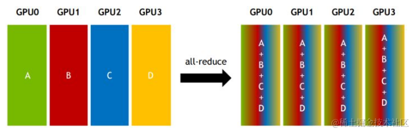

Everything You Need to Know About LLM Infra
Everything You Need to Know About LLM Infra
GPT 3
The GPT model is the starting point of LLM models. If you say Transformer is the starting point, that's also correct. Since we're going to discuss LLM Infra, we need to know who our system architecture and design are serving. Without understanding the model architecture, you'll feel confused about the Infra designs introduced later, such as Prefill-Decode Disaggregation during inference, Context Cache Migration, Traffic-Adaptive Request Routing, etc. Know not only the how but also the why. We start with GPT3 because the parameter sizes of GPT1 and GPT2 are too small. GPT2 has only 1.5B parameters, while GPT3 has 175B parameters. If you're not familiar with Transformer architecture, I recommend this article How Transformers Work. For Chinese users, I recommend the Zhihu article Transformer模型详解（图解最完整版） (in Chinese).
First, let's determine the input and output of GPT3:
- Input: A text segment with a length of 2048 tokens
- Output: The probability distribution of the next token given 2048 input tokens
Here, tokens are tokenized using Byte Pair Encoding (BPE) tokenizer. For example, when I use OpenAI Tokenizer to tokenize I am xieydd, I love GPT3., the result is as follows, with token ids [40, 716, 2124, 494, 88, 1860, 11, 314, 1842, 402, 11571, 18, 13]:
Encoding
The token ids after Tokenizer are just a sequence of numbers, not vectors. We need to vectorize them, converting each token into a 50257-dimensional vector, with the position of the vector token id being 1 and other positions being 0. This way, we obtain the input vector, with a length of 2048 * 50257 = 102760896.
Embedding
This vector is too sparse, so we need to reduce its dimensionality, reducing it to 2048 * 12288.
Positional Encoding
Since Transformer doesn't have a recurrent mechanism like RNN, positional encoding is used to provide information about the position of each token in the sequence. This enables them to understand the position of each word in the sentence. Transformer uses a combination of sin and cos, allowing position encoding to encode sentences of arbitrary length.

Attention
After adding the Vector and Positional Encoding, we get the input vector. Next, we perform Attention. Here, we simplify the 2048 * 12288 input to 3*512.


Image from https://dugas.ch/artificial_curiosity/GPT_architecture.html
- The input vector passes through weights Wq, Wk, Wv to get Query, Key, Value.
- Query is dotted with Key, then divided by the square root of d
- Softmax is applied to get the attention score
- The attention score is dotted with Value
Sparse Attention
GPT3 doesn't use standard Attention, but Sparse Attention. In Sparse Attention, the attention of all tokens is set to 0, except for tokens with a relative distance not exceeding k and tokens with relative distances of k, 2k, 3k, …, as shown in the following figure:

There are two benefits:
- Reduce the computational complexity of the attention layer, saving memory and time, thus enabling processing of longer input sequences;
- Has the characteristic of “local tight correlation and remote sparse correlation,” paying more attention to closer context and less attention to distant context;
Multi-Head Attention
GPT3 repeats the above process 96 times, with 96 heads, and finally concatenates the output in rows and columns.
Feed Forward
The Feed Forward layer is a fully connected layer. The input is the output of Multi-Head Attention, and the output is 2048 * 12288.

Add & Norm
The input before Multi-Head Attention is added to the output of Feed Forward, then Layer Normalization is performed.
Decoding
We need to convert the Add & Norm output of 2048 * 12288 back to 2048 * 50257 to know the probability distribution of the next token among the 2048 tokens. We reuse the weights of the Embedding layer, transpose them, and multiply them with the Add & Norm output to get 2048 * 50257 output. Then, through Softmax, we get the probability distribution, and GPT3 takes the topk tokens as output.
Understanding the architecture of GPT3 allows us to better understand the design of LLM Infra. Next, let's enter the topic of how to train large models. Here, we'll use the current SOTA open-source model DeepSeek-V3 for explanation.
Infra
GPU
The comprehensive solution GB200 NVL72:
- Blackwell Architecture
- NVIDIA Grace CPU
- Fifth-Generation NVIDIA NVLink
- NVIDIA Networking
- NVIDIA Quantum-X800 InfiniBand
- NVIDIA Spectrum™-X800 Ethernet
- NVIDIA BlueField®-3 DPU
CUDA
Network
NVLink
Intra-machine communication can be done through:
- PCIe
- Memory
- NVLink
Simply put, the current PCIe 5.0 bandwidth cannot meet the time requirements for parameter synchronization in AI distributed training, requiring intra-machine device communication with higher bandwidth. NVLink is a technology that provides high-speed interconnection for multiple GPUs on a single machine, replacing PCIe.
With the development of NVLink generations, speeds are continuously improving. At the current fifth generation, a single NVIDIA Blackwell Tensor Core GPU supports up to 18 NVLink 100 GB/s connections, with a total bandwidth of up to 1.8 TB/s, twice that of the previous generation and 14 times that of PCIe 5.0 bandwidth.

NVLink's latest technology, NVLink C2C interconnect, connects two high-performance NVIDIA Blackwell Tensor Core GPUs and an NVIDIA Grace CPU to two Blackwell GPUs. The ultimate goal is to enable NVIDIA GPUs, DPUs, and CPUs to achieve consistent interconnection with custom chips, reaching speeds of 900 GB/s. The following figure shows the architecture diagram of NVIDIA GH200 Grace Hopper Superchip:

NVSwitch

When GPUs are connected via NVLink for P2P, the maximum total bandwidth can reach 1.8TB/s, but each GPU must split the same 1.8TB/s connection into seven dedicated 256 GB/s point-to-point connections. That is, the communication between GPU and GPU can only reach up to 1.8TB/s. To break this limitation, NVLink Switch is needed. NVSwitch is actually an ASIC chip. NVLink Switch can ensure that communication bandwidth between GPUs reaches the full bandwidth of 1.8TB/s, significantly compressing communication time. During the inference process, real-time response tok/s/user increases by 1.4 times compared to the situation without NVSwitch, and the larger the batch, the more obvious the improvement.
InfiniBand
Refer to 知乎-AI 集群基础设施 InfiniBand 详解 (in Chinese).
Inter-machine communication can be done through:
- TCP/IP protocol
- RDMA(Remote Direct Memory Access) protocol
- InfiniBand
- RoCE (RDMA over Converged Ethernet)
- iWARP (Internet Wide Area RDMA Protocol)
RDMA protocol doesn't require CPU participation like the TCP/IP protocol. Data doesn't need to pass through the data link layer, network layer, transport layer, and application layer, with the CPU participating in operations such as receiving and unpacking data packets. RDMA's kernel bypass mechanism allows direct data reading and writing between applications and network cards. At the same time, RDMA's zero-copy mechanism allows the receiving end to directly read data from the sender's memory, greatly reducing the burden on the CPU and improving CPU efficiency.

RDMA networks are divided into three types: Infiniband, RoCE, and iWARP. Among them, Infiniband is a network designed specifically for RDMA, ensuring reliable transmission at the hardware level. RoCE and iWARP are both Ethernet-based RDMA technologies that support corresponding verbs interfaces.
IB (InfiniBand): Building an RDMA network based on IB technology requires dedicated IB network cards and IB switches.
iWARP (Internet Wide Area RDMA Protocal): An RDMA technology based on TCP/IP protocol, defined by the IETF standard. iWARP supports using RDMA technology on standard Ethernet infrastructure, but servers need to use network cards that support iWARP.
RoCE (RDMA over Converged Ethernet): An Ethernet-based RDMA technology, also proposed by IBTA. RoCE supports using RDMA technology on standard Ethernet infrastructure, but requires switches to support lossless Ethernet transmission and servers to use RoCE network cards.
IB link speeds are getting faster and faster with network bandwidth upgrades, as shown in the following figure:

Here, x4 and x12 refer to the number of Links in the cable. x4 represents 4 Links, and x12 represents 12 Links. One Link consists of two wires, one for sending and one for receiving.
InfiniBand cables are different from Ethernet cables and fiber optic cables. InfiniBand network interconnection products include: DAC high-speed copper cables, AOC active cables, and optical modules.
Mellanox's market share in the global InfiniBand market is basically unbeatable. After NVIDIA acquired Mellanox, it also launched its own seventh-generation NVIDIA InfiniBand architecture in 2021: NVIDIA Quantum-2.
NVIDIA Quantum-2 platform includes: NVIDIA Quantum-2 series switches, NVIDIA ConnectX-7 InfiniBand adapters, BlueField-3 InfiniBand DPUs, and cables. Currently, the latest are:
- NVIDIA Quantum-X800 InfiniBand
- NVIDIA® ConnectX® InfiniBand HCAs (Host Channel Adapters), ConnectX-8 InfiniBand SuperNIC can provide data throughput of up to 800 Gb/s
- InfiniBand Switches have up to 144 ports, with each port at 800 Gb/s for a total of 115Tb/s
- NVIDIA Spectrum™-X800 Ethernet
- Provides 800 Gb/s throughput through SuperNICs and NVIDIA Spectrum-X800 SN5600 Ethernet switch
- Switch has up to 64 ports, with each port at 800 Gb/s for a total of 51.2Tb/s
- NVIDIA BlueField®-3 DPU
- Supports Ethernet and InfiniBand connections, at 400Gb/s speed
- NVIDIA DOCA software framework for SDN
- Networking, security, storage, management, AI acceleration, and other functions
- BlueField SuperNICs: Provides best-in-class remote direct-memory access over converged Ethernet (RoCE) network connectivity between GPU servers at up to 400Gb/s.
GPUDirect is a technology developed by NVIDIA that enables direct communication and data transfer between GPUs and other devices (such as network interface cards (NICs) and storage devices) without involving the CPU. GPUDirect technology includes GPUDirect Storage, GPUDirect RDMA, GPUDirect P2P, and GPUDirect Video.
- GPUDirect P2P is mainly for multi-GPU scenarios on a single machine, allowing GPUs to directly access the video memory of the target GPU through PCI Express
- GPUDirect RDMA is mainly for multi-machine, multi-GPU scenarios. GPU 1 on computer 1 can directly access the GPU memory of computer 2 without needing CPU -> CPU and then from computer 2's CPU -> GPU with multiple copies
Communication
MPI (Message Passing Interface) is a communication protocol commonly used in parallel computing. MPI has multiple implementations, such as OpenMPI, Gloo, NCCL, etc.
NCCL (Nvidia Collective multi-GPU Communication Library) implements multi-GPU and multi-node collective communication primitives optimized for NVIDIA GPU performance. NCCL provides implementations such as All Gather, All Reduce, Broadcast, Reduce, Reduce-Scatter, etc. These implementations are optimized to communicate through PCIe, NVLink, InfiniBand, and other high-speed interconnections, thereby achieving high bandwidth and low latency.
Let's introduce several communication primitives:
- Reduce: Receive data from multiple senders, and finally combine them onto one node.

- AllReduce: A variant of Reduce that reduces the data from all nodes onto all nodes.

- Broadcast: One node sends data to all nodes.
Different network topologies have a significant impact on NCCL communication speed, as shown in the following figure:
- The first type is where two GPUs are connected via the CPU and then via QPI to the two cards on another CPU, so the speed is the slowest, but it can still reach >5GB/s.
- The second type is where two GPUs are connected via a PCIe switch and then through the CPU, so the speed is slightly lower.
- The third type is where all four cards are on the same PCIe switch, so the bandwidth is higher and can reach >10GB/s, which is the size of PCIe bandwidth.
- The fourth type is the DGX-1 architecture, connected directly via NVLink, with the fastest speed, reaching 60GB/s.
- The left figure shows 2 machines with 8 cards, with PCIe within the machine and InfiniBand between machines, achieving >10GB/s speed. InfiniBand basically achieves the communication speed within the machine;
- The right figure shows 4 machines with 32 cards, with NVLink within the machine and InfiniBand between machines, achieving bandwidth >40GB/s.
NCCL P2P has several levels:
- LOC: Never use P2P (always disabled)
- NVL: Use P2P when GPUs are connected via NVLink
- PIX: Use P2P when GPUs are on the same PCI switch.
- PXB: Use P2P when GPUs are connected via PCI switches (possibly multiple hops).
- PHB: Use P2P when GPUs are on the same NUMA node. Traffic will pass through the CPU.
- SYS: Use P2P between NUMA nodes, possibly across SMP interconnects (e.g., QPI/UPI).
Storage
Operation and Maintenance
Failure
Hardware Exceptions:
- GPU ECC Error: Usually requires restarting the machine or Reset GPU. With 128 nodes, there is one every 1-2 days.
- IB (Infiniband)/NCCL issues: Usually hardware issues, such as a broken network card or network jitter, etc.
- Due to network issues, training speed is reduced, such as by about 20%, requiring binary search to identify abnormal nodes and replace them accordingly.
- It can also cause tasks to fail directly, such as:
p2p_plugin.c:141 NCCL WARN NET/IB : Got async event : port error.
- Task Hang: Usually related to IB/NCCL issues and also requires manual detection. Task hangs occurred multiple times during OPT-175B training.
- GPU Card Loss: Usually triggers CUDA Error or the program exits abnormally, such as: “RuntimeError: Caught RuntimeError in pin memory thread for device 4.”
- Machine Abnormalities: Hardware abnormalities other than GPU, such as hard disk, CPU, etc., or even the machine crashing directly.
- Machine Configuration Abnormalities: For example, discovering that a machine has MIG enabled.
- Cluster Maintenance: Usually, a cluster doesn't support just one task, and occasionally maintenance and upgrades are needed, which may require stopping tasks.
- Storage Failure: For example, Lustre storage failing
Monitoring & Fault Tolerance
Automatic failure detection and rapid recovery mechanisms are needed:
- When a user submits a training task, in addition to creating a training Executor on each GPU, a training daemon process is also created that periodically sends heartbeats to the Driver. Heartbeat signals contain various information to enable real-time anomaly detection and send alert information. When the Driver doesn't receive heartbeat signals within a specific time, it also triggers the failure recovery process, including:
- Pause all training Executors and perform a series of self-check diagnostics.
- Once an abnormal machine is identified, it is evicted, and an equal number of healthy machines that passed tests are added to the cluster. Additionally, user interfaces are provided to allow users to manually identify and evict abnormal machines.
- After machine recovery is complete, training resumes from the most recent Checkpoint. The process of saving and restoring Checkpoints also needs optimization to minimize the impact on training progress. A two-stage approach is introduced. In the first stage, each GPU training process writes state information from video memory to host memory. Due to high-speed PCIe bandwidth, this process usually takes only a few seconds, so the training process can immediately continue training. In the second stage, a background process asynchronously synchronizes state information to a distributed file system. MegaScale uses HDFS.
- Its heartbeat signals include IP address, Pod name, hardware information, etc., and also include current training progress information. Additionally, the stdout/stderr logs of training processes are also collected for real-time aggregation, filtering, and analysis. If warning or error keywords are identified, the Driver will report these diagnostic information in real-time. Finally, RAMA's traffic metrics are also included to better identify network utilization and communication efficiency
Routine inspections (need a monitoring system accurate to the millisecond level to avoid Spikes):
- Start large matrix multiplication tasks to capture these failures
- Also start some simple communication tests to ensure the network is normal
- In-machine testing: Loopback test: Measure the loopback bandwidth from all RAMA network cards in the machine to various in-machine endpoints (including memory, GPU). Full-mesh testing is performed, covering all possible link combinations, to infer potential link issues in PCIe configuration.
- RNIC-to-RNIC testing: Mainly tests connectivity and bandwidth performance between different RNICs in the machine. This is to discover whether RNICs meet speed specifications or have routing issues.
- NCCL testing: All-to-All testing is performed within the machine, and All Reduce testing is also performed between machines on the same TOR switch to discover potential hardware failures and performance issues
Training
For large model training, here we mainly reference Andrej Karpathy's sharing at MSBuild 2023, which is divided into the following four stages:
- Pre-training
- Supervised Fine-Tuning
- Reward Modeling
- Reforcement Learning
Before introducing these four stages, let's first普及 some Hardware knowledge, because large model training requires a large amount of computing resources, such as GPUs. Additionally, data storage and network communication need to be considered.
Hardware
GPU
When we mention GPU (Graphics Processing Unit), we naturally associate it with NVIDIA. There's some truth to this because NVIDIA's GPUs occupy a large market share in the deep learning field. However, this market is huge, with Application-specific Integrated Circuits (ASICs) chips from AMD and Brodcom also continuously devouring market share.
Although GPU has the word “Graph” in it, in AI, we mostly use GPGPU (General-purpose computing on graphics processing units). If you're not familiar with GPU terminology, I recommend checking out the GPU Glossary maintained by Modal. GPU relative to CPU
Network
Storage System
Pre-training
Pre-training the model is the stage that consumes the most computing power and data in large model training. The goal of this stage is to let the model learn the basic laws of language, such as grammar, semantics, etc. The data volume in this stage is very large, usually at the TB level, and the training usually takes from a few weeks to several months. Training in this stage is usually unsupervised, meaning we don't need labeled data. Training in this stage is usually done on large-scale GPU clusters, such as OpenAI's GPT3, which was trained on thousands of V100s for a month.
As the pre-training that consumes the most computing resources, in this chapter, we'll share some techniques for LLM training, such as distributed training parallelism techniques and training optimization techniques.
Distributed Training
Refer to OpenAI's article Techniques for training large neural networks, which is mainly divided into the following four parts:
- Data Parallelism
- Pipeline Parallelism
- Tensor Parallelism
- Expert Parallelism
- Here, blocks of different colors represent different layers of the model
- Dashed lines represent splitting onto different GPUs
- Arrows represent the forward propagation and backpropagation of the model
Data Parallelism
Data Parallelism divides data into different subsets and distributes them to different GPUs. For each GPU, the model is complete, so each GPU needs to store the complete parameters of the model. Therefore, when GPU video memory cannot store model parameters, Data Parallelism is not applicable, although there are currently some Offload Memory technologies or KV Cache that can alleviate this problem.
Because each GPU needs complete parameters, when updating, it's necessary to ensure that the parameters of working threads (usually consistent with GPUs) remain consistent. This requires introducing blocking communication on working threads:
- Each worker calculates gradients
- Average the gradients of each worker
- Each worker updates parameters
The larger the number of parameters and the more threads, the greater the overhead of this blocking communication. Of course, asynchronous communication can be used, but this may damage the learning rate, which is not worth the loss, especially for LLM models, which involve significant investment and cannot tolerate mistakes. Communication between GPUs is implemented through the NCCL (NVIDIA Collective Communication Library). The above communication process is usually called AllReduce, as shown in the following figure:

We notice that if AllReduce is processed in a separate process, this process needs to Gather All and Scatter All, so the communication overhead of a single process is proportional to the number of nodes and the number of parameters. To eliminate the blocking wait waste caused by the number of nodes and parameters, we can use Ring AllReduce, as shown in the following figure:

First, construct a ring with N workers, and each process divides data into N chunks.

The Nth worker sends the Nth chunk to worker[N+1] and simultaneously receives chunks from worker[N-1].

The Nth worker reduces the received N-1 chunk with its own N-1 chunk and then sends it to worker[N+1].

Repeat the receiving, reducing, and sending process N-1 times, so each worker obtains a part of the result. Finally, perform another round of Send operations without reduce operations, so each worker obtains the final result.
Pipeline Parallelism (Model Parallelism)
Pipeline Parallelism divides the model into different stages and distributes them to different GPUs. For large models, such as LLaMA 65B, if the parameters are FP32, the total video memory needed is 260GB. However, most training uses half precision, which is FP16, so 130GB of video memory is needed. Currently, the most advanced H200 has 80GB of video memory. Currently, the DeepSeek V3 trained by the DeepSeek team has first verified the feasibility and effectiveness of FP8 training on ultra-large-scale models. However, DeepSeek V3 is a MOE (Mixtures of Experts) model with parameters reaching 671B, which we'll discuss later. The communication volume of PP is relatively small, so it's often placed on different machines.

- The input and output of each layer of the model have an order. F represents Forward, B represents Backward, and U represents Update
- Each worker (GPU) is responsible for processing only one stage at the same time
- On the time series, resource utilization appears with a large number of bubbles
To optimize this problem, we can apply the idea of ring allreduce mentioned earlier, which is to split batch data and overlap computation time with waiting time, as shown in the following figure:


PipeDream, on the other hand, lets workers alternately handle forward and backward passing. Compared to GPiPe, PipeDream has better resource utilization but requires more communication overhead.
Tensor Parallelism
Tensor Parallelism divides the model's operators into different subsets and distributes them to different GPUs, such as matrix multiplication. Pipeline parallelism divides the model's layers onto different GPUs, while Tensor Parallelism divides the operators within model layers onto different GPUs. For modern models such as Transformer, dot product computation of activation values and large weights is the bottleneck of computation. For example, MegatronLM parallelizes matrix multiplication in the Self-Attention and MLP layers of Transformer. PTD-P uses tensor, pipeline, and data parallelism, where the pipeline scheduler assigns multiple non-consecutive layers to each device, reducing bubble overhead at the cost of network communication. Its communication volume is larger, so TP is often placed within a single machine to fully utilize the high bandwidth of NVLink within the machine.
The following figure uses the 8DP 12PP 4TP scheme, so the GPUs needed are 8x12x4=384:

Expert Parallelism
Mixture-of-Experts (MoE) is a method where certain parts of each layer of the model are placed on the same GPU for execution. This means you can control which parts of the model will be applied to the current input and output through a gate controller. Each group of parameters controlled by a gate is an Expert, and different Experts are on different GPUs.

Obviously, the MoE architecture can significantly increase the size of the model. This comes from an experience: with limited computing resource budgets, training a larger model with fewer training steps often yields better results than training a smaller model with more steps. Especially in the pre-training stage, compared to dense models, mixture-of-experts models can usually reach the same quality level faster. MoE is based on the Transformer architecture and consists of the following two parts:
- Sparse MoE layers: MoE layers have several experts. As shown in the following figure, there are 8 experts. These experts can be FFN layers or MoE layers, like Russian nesting dolls.
- Gating network or routing: This routing decides which expert a token will be sent to. The router's parameters are trained during training.
Above, we mentioned the advantages of MoE, but MoE also has some disadvantages:
- Insufficient generalization capability during fine-tuning, prone to overfitting
- During inference, all parameters need to be loaded into memory, even if only one expert is activated. For example, for Mixtral 8x7B, VRAM needs to hold 47B parameters. This is not 56B because only the FFN in MoE is independent, and other layers share parameters.
- Tokens are routed to different experts, resulting in uneven batch size distribution and waste of computing resources.
For gating networks, in addition to the most typical network with Softmax, there are other networks, such as Noisy Top-K Gating, which introduces adjustable random noise and retains the top k values.
- Random noise is to make the load between experts more balanced, avoiding only popular experts being trained during training. In the transformers library, this can be controlled by the aux_loss parameter.
- topk can selectively retain the top k values, accelerating training and inference
Let's list two typical MoE models or methods:
- Gshard

- Random routing: In the Top-2 setting, we always choose the highest-ranked expert, but the second expert is randomly chosen based on its weight proportion.
- Define how many tokens an expert can handle. If both experts’ capacities reach the limit, tokens will overflow and be passed to the next layer through residual connections, or in some cases, completely discarded.
- Switch Transformer
Switch Transformer accepts two inputs, each with 4 experts, rather than a single input with at least two experts. The advantages of doing this are:
- Reduce the computational burden of the gating network (routing)
- The input batch for each expert can be at least halved
- Lower communication costs while maintaining model quality
At the same time, Switch Transformer also researched expert capacity, providing a buffer for uneven token allocation through a capacity factor greater than 1. Increasing the capacity factor (CF) can enhance model performance, but this also means higher communication costs and demand for video memory to save activation values. During training, the auxiliary loss for each Switch layer is added to the total model loss. This loss encourages uniform routing and can be weighted using hyperparameters.
Switch Transformer also explored mixed precision, meaning experts use original precision while other parts use Bfloat16 precision, increasing training speed while ensuring training stability.
Researchers of ST-MoE found that different experts in the encoder tend to focus on specific types of tokens or shallow concepts. For example, some experts may specialize in punctuation, while others focus on proper nouns, etc. In contrast, experts in the decoder usually have a lower degree of specialization.
What are some tricks for training MoE models:
- Sparse models are more prone to overfitting, so it's beneficial to try stronger internal regularization measures when handling these models, such as using a higher dropout rate. For example, we can set a lower dropout rate for dense layers and a higher dropout rate for sparse layers to optimize model performance;
- MoE models are prone to overfitting on small tasks such as SuperGLUE and don't perform as well as on large tasks such as TriviaQA;
- Freezing MoE parameters for fine-tuning can significantly speed up training and has little impact on model effectiveness;
- MoE is suitable for smaller batch sizes and higher learning rates;
- Fine-tuning on sparse models works better than on dense models.
How to choose between sparse models and dense models?
- Sparse Mixture-of-Experts (MoE) models are suitable for scenarios with multiple machines and high throughput requirements. Under fixed pre-training computing resources, sparse models can often achieve better results. Conversely, in scenarios with less video memory and lower throughput requirements, dense models are a more suitable choice.
- Directly comparing the number of parameters of sparse models and dense models is inappropriate because these two types of models are based on completely different concepts and parameter calculation methods.

We just talked about optimization methods for distributed training and mentioned Expert Parallelism, which led us to MoE models. So why do MoE models need Expert Parallelism?
- In Expert Parallelism, experts are placed on different devices, and each device processes different batches of training samples;
- When the parameters of a single expert can be on one device, use data parallelism and expert parallelism for training
- If a single expert model cannot be on one device, model parallelism needs to be added to distribute the single expert model to different devices, while using data parallelism for training acceleration
Deployment optimization methods for expert models:
- Distill expert models
- The router is modified to route entire sentences or tasks directly to one expert. This can extract a subnetwork for serving, helping to simplify the model structure.
- Merge the weights of various experts, reducing the number of parameters needed during inference
Zero-DP
Sequence Parallel
Context Parallelism
Prepare Data
The training data for LLaMA during Pre-training is as follows:
After collecting raw data, data processing is needed, such as Tokenization.
Model
Let's look at a comparison of some parameters between GPT3 in 2020 and LLaMA in 2023:
Explanation of the parameters in the above figure:
- Vocabulary Size: 50257. This refers to the number of vocabulary in the Tokenizer, which is the dimension of the input vector.
- Context Length: 2048. This refers to the size of the window that the generative model sees before generating the next token.
- Although the parameter size of GPT3 training is 175B, while LLaMA only has 65B, the tokens trained by LLaMA are 1.5T > GPT3's 300B.
- Some training hyperparameters, such as batch size, learning rate, number of heads, and number of model layers, etc.
If the training input is the following text, it will be marked by special tokens <s>:
- Row 1: Here is an example document 1 showing some tokens.
- Row 2: Example document 2 Example document 3 Example document
- Row 3: This is some random text just for example This
- Row 4: 1,2,3,4,5
The result after Tokenization is as follows:
Here, Batch is 4, and Context Length is 10. Each cell can only see cells in the same row. Green is the context that the currently highlighted token can see, and red is its target.
Training
Supervised Fine-Tuning
In this stage, small amounts of high-quality data are needed, usually human-labeled data, such as prompts and corresponding ideal responses, usually requiring 10~100k.
In this stage, the Pre-training model is loaded, and then training is performed on this dataset to get the SFT (Supervised Fine-Tuning) model. Currently, there are many models undergoing SFT, such as Instruct, Coder, Math, and Reasoning, which are targeted at instructional QA, programming, mathematics, and reasoning task scenarios, respectively.
Reward Modeling
The RLHF (Reward Learning from Human Feedback) stage is divided into two parts: one is the Reward Model, and the other is Reinforcement Learning.
The Reward Model turns data collection into a comparative form. For example:

Here, humans need to input the same instruction and Rank among different outputs to get a pair dataset, about 100k~1M.
During training:
- The blue prompt in each row is the same
- Yellow is the SFT model output
- Green is the reward token, which is the SFT evaluation of the quality of the model output, compared with the quality of human evaluation
- The loss function measures the consistency between the reward token and the human-labeled ground truth
Reinforcement Learning
Prepare 10k~100k Prompt data, and the Reward Model trains these models, at the level of 100 GPU-days.

- The blue prompt in each row is the same
- Yellow is the SFT model output, serving as the initialization value and as training data for the Reward Model
- Green is the reward token, which will evaluate the sampled token, which is the yellow part. If it's high, the probability of the yellow part token being sampled in subsequent sampling will increase.
The PPO algorithm is the RLHF model. Why use RLHF? See the following figure. RLHF can significantly reduce the entropy of predict, meaning the prediction is more stable.
Refer to 聊聊Reasoning Model的精巧实现（ReFT, Kimi K1.5, DeepSeek R1） (in Chinese) summarized by Dr. Jiang Fuchun on Zhihu, which introduces the implementation of three Reasoning Models: ReFT, Kimi K1.5, and DeepSeek R1, where RL is key.
RLHF can refer to OpenRLHF.
Serving
Model Optimization
I originally wanted to put this model section under Model, but the model optimization here is mainly to make inference faster, so I put it under Serving.
MHA vs MQA vs GQA vs MLA
First, let's explain these terms:
- MHA: Multi-Head Attention
- MQA: Multi-Query Attention
- GQA: Global Query Attention
- MLA: Multi-Latent Attention
Refer to Soochow University's blog 缓存与效果的极限拉扯：从MHA、MQA、GQA到MLA (in Chinese).
MHA
In the Transformer decoder, since the attention of a token depends on previous tokens, it doesn't recalculate the previous context but caches its Key and Value. Why isn't Query cached?
As shown in the Attention formula above without Causal Mask, from top to bottom, in stage T, only Q participates in the calculation at every place, but K and V are already calculated and don't need to be calculated again. However, after introducing KV Cache, although the computational amount is reduced, the resident memory usage increases. Moreover, as the Context length grows, the video memory occupation also increases, and a single card may not be able to hold it. If extended to multiple cards or multiple machines, communication bandwidth bottleneck limitations will be introduced. Therefore, this chapter is to optimize the KV Cache problem.
MQA
MQA (Multi-Query Attention) has a simple idea: all headers share one K V, so KV Cache is reduced to 1/h of the original. Its disadvantage is that it brings certain impacts to model performance.
GQA
GQA (Grouped-Query Attention) is to alleviate the impact of MQA on model performance. It divides h heads into g groups, so KV Cache is compressed by h/g times. In llama2/3-70B, GQA's g=8, and h=32. Here, g=8 is considering that a single machine has 8 cards, so during calculation, it ensures the diversity of K and V as much as possible while minimizing inter-card communication.
MLA
MLA (Multi-Latent Attention) has many mathematical concepts that are a bit complex for me. You can refer to the Soochow University blog mentioned above. Let me summarize the idea:
- On the basis of GQA, treat K and V together as the result of multiplying the input by a parameter matrix [K,V] = x.W
- Enhance GQA's capability through different projection matrices, and the KV Cache can be kept the same size during inference
- Then conversely, if we only need capabilities similar to GQA, we can take a smaller value for dimension W (DeepSeek-V2 took 512), thereby further compressing KV Cache.
Serving Pattern
With the booming development of LLM applications such as Chat and Code Assistant, LLM Serving has gradually expanded from single-card to multi-card, and even multiple instances. This has given rise to Orchestration Patterns, such as prefill-decode disaggregation, context cache migration, traffic-adaptive request routing, etc.
Prefill-Decode Disaggregation
Why separate P (Prefill) and D (Decode)? Refer to prefill 和 decode 该分离到不同的卡上么？ - Chayenne Zhao的文章 - 知乎 (in Chinese).
The essence of P and D separation is that the computational models of the P and D stages are different. The P stage is Compute bound, and the D stage is Memory bound.
- Compute bound: The calculation of Attention for all input tokens. Increasing batch is limited by this, and there's no more computing power available.
- Memory bound: Each token generation requires frequent reading of KV Cache from video memory. Increasing batch is limited by this.
Advantages:
- Significantly reduces video memory usage. During the P stage calculation, intermediate activation value parameters are kept in video memory, while the D stage only needs the KV Cache from the P stage. If P and D are not separated, the video memory occupied by activation values during the D stage is waste. In cases of larger models and longer contexts, the waste of video memory is more obvious.
- Improve throughput: Separating prefill cards and decode cards on a multi-card system can achieve more efficient pineline parallelism, increasing throughput.
Disadvantages:
- Communication overhead: Transferring KV cache across cards undoubtedly brings new communication pressure.
- Hidden overhead: To strengthen communication, the cost of networking hardware cannot be ignored. Additionally, the fragmentation caused by deploying many different machine models in large-scale data centers also comes with a significant price.
P/D separation has brought architectural innovations, such as:

- Maximize KV Cache cache hits and MFU (Model FLOPs Utilization) while meeting SLO (TTFT (time to first token), TBT (token between token)). Because reusing KV Cache involves remote communication, such as reading from other media (CPU, DRAM, SSD) into video memory, it increases TTFT. Meanwhile, larger batches increase MFU but also increase TBT time.
- MoonCake designed a global scheduler (conductor). For each request, Conductor needs to select a set of devices for prefill and decode, then schedule. First, migrate as much KV cache as possible to the prefill device. Then, on the prefill device, continuously stream prefill KV cache to the decode device through chunked and layer-wise prefill methods. Finally, on the decode device, load KV cache, add this request to continuous batching, and complete decoding.
- MoonCake established resource pools for CPU DRAM, SSD, and RDMA resources in the GPU cluster.
- Transferring KV cache between GPU and GPU is completed by a separate GPU direct RDMA device called messenger. The hash-based prefix storage in the original article can provide context caching APIs for upper-layer users.
- If the number of uncached tokens in a request exceeds a specific threshold (prefill_chunk), this request will be split into multiple chunks and executed in a pipeline. Generally, the prefill_chunk size is greater than 1k.
- Requests that were estimated during the prefill stage and not rejected may be rejected during the decode stage due to SLO reasons. This is also a significant staleness problem.
Chunked prefill can refer to 基于 chunked prefill 理解 prefill 和 decode 的计算特性 - Chayenne Zhao的文章 - 知乎 (in Chinese).
MLC's MicroServing API orchestrates the inference engine through fine-grained APIs:
- Data Parallel
- Prefill-Decode Disaggregation
- Balanced prefill-decode disaggregation: Prefill and decode workloads may be imbalanced. When processing long prompts, the prefill engine may be overutilized, while the decode engine runs at low utilization or even remains idle. Dynamically offload some prefill computation to the decode engine. To achieve this, the router needs to decide “decode_start” (the position where the decode engine starts prefilling) and pass it to all APIs.
Context Cache Migration
When serving QA workloads, developers tend to put different categories of context caches into different engines and schedule incoming traffic based on their matched context categories. Consider multiple engines, some specialized in historical backgrounds and others in scientific backgrounds. If scientific requests outnumber historical requests, we may want to switch some historical engines to scientific engines through context migration, and vice versa. The MicroServing fine-grained control inference engine API mentioned above enables efficient KV transmission between engines without interrupting service.
Traffic-Adaptive Request Routing
Dynamically reconfigure orchestration patterns based on workload characteristics without changing the underlying engine. Programmable routers allow seamless switching between different orchestration strategies:
- When the prefill:decode ratio (time of prefill input tokens / total time of decode all output tokens) increases, more prefill computation can be transferred to the decode engine through balanced prefill-decode disaggregation.
- If most prompt data is found in the decode engine's Context Cache, the system can completely bypass the prefill engine and directly call start_generate to handle the non-cache part of the prompt.
Serving Optimization
- KV Cache
- Paged Attention
- Quantization
- Speculate Decode
- Constrainted Decoding
- Chunked prefill
- Prompt Cache
- KV Compression
KV Cache
Refer to 大模型推理加速：看图学KV Cache - 看图学的文章 - 知乎 (in Chinese).
A common technique for large model inference performance optimization is KV Cache. This technique can improve inference performance through the idea of space for time without affecting any computational accuracy. For details, refer to the reference above. Let me summarize:
- Transformer Encode stage is autoregressive
- Under autoregression, the kth calculation of Attention only depends on the kth Q. Other parts are repeated calculations and can be cached through KV Cache
Paged Attention
Refer to 图解大模型计算加速系列之：vLLM核心技术PagedAttention原理 - 猛猿的文章 - 知乎 (in Chinese).
Paged Attention mainly solves the problem of low video memory utilization caused by directly pre-allocating video memory for input requests. It improves the video memory utilization of inference by borrowing from the memory paging technology of modern operating systems.

As shown in the figure above:
- Request A is a model request, equivalent to a process in an operating system
- Logical KV Blocks are equivalent to virtual memory pages in an operating system. Each Block has a fixed size, with a default size of 16 in vLLM, which can hold K/V values of 16 tokens
- Block Table is equivalent to a page table in an operating system, recording the position of each Logical Block in physical memory
- Physical KV blocks are equivalent to physical memory pages in an operating system, storing real K/V values, which are stored in vRAM
How does Paged Attention work in different scenarios?
- Scenario
- Parallel Sampling: I send a request to the model, hoping it will continue writing the prompt and give three different answers. We call this scenario parallel sampling.
- Beam Search: At each decode stage, I don't produce just 1 token, but produce top k tokens (here k is also called beam width). The top k tokens necessarily correspond to the top k sequences at this moment. I feed these top k sequences into the model. Assuming the vocabulary size is |V|, at the next moment, I'll select top k again among k*|V| candidates, and so on. It's not hard to imagine that every time I feed the top k sequences into the model, there's a lot of KV cache duplication in their preceding tokens.
- How does vLLM schedule:
- Parallel Sampling: Each request is assigned a Logical Block, which is mapped to a Physical Block in vRAM. For Parallel Sampling, each request's Logical Block is independent, but Physical Blocks are shared. Whether to release is determined by ref count rather than independently allocating Physical Blocks. In the Decode stage, through Copy-on-Write, the KV Block of the newly generated token is copied to a new Physical Block, and the ref count of the Block where the preceding token of the newly generated token is located is -1.
- Beam Search: Based on the latest beam search decoding results, release the logical blocks and corresponding physical memory space that are no longer needed, achieving the goal of saving video memory. For the specific process, refer to the Zhihu article mentioned above.
Speculate Decoding
Refer to Jiarui's article 大模型推理妙招—投机采样（Speculative Decoding） - 方佳瑞的文章 - 知乎 (in Chinese).
The professional name “speculative sampling” is a bit awkward and should be called inference sampling. The core of this technology is that during the decoding process, the decoding of some tokens is relatively easy, while the decoding of other tokens is very difficult. Therefore, simple token generation can be handled by small models, while difficult tokens are handled by large models. The small model here can use the same structure as the original model but with fewer parameters, or simply use n-gram models. Small models not only have less computational volume but, more importantly, small model generation with large model correction reduces the need for memory access.
Constrainted Decoding
Chunked prefill
Prompt Cache
KV Compression
Quantization
DeepSeek V3
Finally, let's analyze the domestic LLM model DeepSeek V3. This model was developed by the DeepSeek team. Through analysis, let's correspond it with the technologies mentioned above. Currently, DeepSeek-V3 is a MoE architecture trained on 14.8T tokens, with total parameters of 671B and 38B activated per token. Complete training took 2.788M hours on H800.
Architecture

As shown in the figure above, DeepSeek-V3 adopts the MoE architecture, where:
- The FFN layer in the Decode part of the original Transformer is replaced with a MoE layer, using DeepSeekMoE here;
- The Multi-Head Attention layer in the original Transformer architecture is replaced with a Multi-Latent Attention layer.
DeepSeekMoE
Refer to DeepSeekMoE论文阅读 (in Chinese). This architecture mainly makes experts truly experts (having non-overlapping and concentrated knowledge), avoiding knowledge hybridization and knowledge redundancy among experts, achieving better performance with less resource occupation.

DeepSeekMoE introduces two core strategies:
- Subdivide experts into smaller units and activate more combinations from them, allowing more flexible selection of activated experts.
- The intuition of this strategy is that if the fewer experts a token can be assigned to, the harder it is for these experts to learn differentiated knowledge
- To not increase computational volume when increasing the number of assignable experts for tokens, expand activated experts by N times while reducing the hidden layer dimension of FFN to 1/N
- Isolate some experts as shared experts to capture general knowledge and reduce redundancy between routing experts
- Having dedicated shared experts to capture and integrate general knowledge from different contexts can reduce parameter redundancy between other routing experts. This reduction in redundancy will help build a model with higher parameter efficiency and more professional experts.
- Here, the router won't work on shared experts but will directly assign tokens to shared experts.
- Shared experts are separated from the total number of experts, meaning subdivided experts = total experts - shared experts
Multi-Latent Attention
This method comes from DeepSeek-V2. Refer to MHA vs MQA vs GQA vs MLA.
Auxiliary-loss-free strategy for load balancing
Auxiliary loss introduces random noise to prevent experts from having the problem of “the rich get richer” during training, but it also damages model performance. The Auxiliary-loss-free strategy is to achieve a better trade-off between load balancing and model performance.
Specific approach:
- Introduce bias
- During training, if it's discovered which experts are overloaded, reduce γ (the hyperparameter for bias update speed). If expert load is insufficient, increase γ
But to prevent extreme imbalance within any single sequence, Complementary Sequence-Wise Auxiliary Loss is also adopted, encouraging expert load on each sequence to reach balance. For specific algorithm formulas, refer to the paper.
Node-Limited Routing
Use a limited routing mechanism to limit communication costs during training. Ensure each token will be sent to at most M nodes, which are selected based on the sum of the highest affinity scores of experts distributed on each node. Under this constraint, the MoE training framework can almost achieve full computation-communication overlap, meaning computation and communication can proceed simultaneously without blocking each other.
No Token-Dropping
DeepSeek-V3 doesn't drop any tokens during training. Additionally, specific deployment strategies are used to ensure load balancing during inference, so DeepSeek-V3 also doesn't lose tokens during inference.
Multi-Token Prediction

Refer to 知乎 (in Chinese).
Infrastructure
Cluster Status
- 256 nodes, with 8 cards per node, totaling 2048 NVIDIA H800 GPUs
- Cards are connected via NVLink and NVSwitch between cards, and different nodes are connected via InfiniBand
Training Framework
HAI-LLM:
- 16-way Pipeline Parallelism across 8 nodes
- DualPipe overlaps the computation and communication phases of forward and backward processes, thereby solving the challenge of heavy communication overhead brought by cross-node expert parallelism
- 64-way Expert Parallelism
- cross-node all-to-all communication kernels to fully utilize InfiniBand (IB) and NVLink bandwidths.
- ZeRO-1 Data Parallelism
- Carefully optimized memory usage, enabling us to train without using expensive tensor parallelism (TP)

Based on the figure above:
- DualPipe significantly reduces bubbles
- DualPipe increases peak activation memory by several times, with PP < 1
- Although DualPipe needs to retain two copies of model parameters, this doesn't significantly increase memory consumption because a larger EP size is used during training
- Neither bubbles nor activation memory increase as mini-batch increases
Communication
Cross-Node All-to-All Communication:
- cross-node GPUs are fully interconnected with IB (50GB/s)
- intra-node communications are handled via NVLink (160GB/s)
- How to effectively utilize the different bandwidths of NVLink and IB
- Limit each token to be scheduled to at most 4 nodes, thereby reducing IB traffic
- When each token makes a routing decision, it will first be transmitted via IB to the GPU with the same intra-node index on its target node. Once it arrives at the target node, we will strive to ensure it's immediately forwarded via NVLink to the specific GPU hosting the target expert without being blocked by subsequently arriving tokens
- Communication via IB and NVLink is completely overlapped, and each token can effectively select an average of 3.2 experts per node without additional overhead from NVLink. This means that while DeepSeek-V3 currently selects 8 experts, it can be expanded to 3.2x4.
- Use warp specialization technique to split the Streaming Multiprocessor (SM) into 10 communication channels.
- Dispatching phase: (1) IB sending, (2) IB to NVLink forwarding, and (3) NVLink receiving are handled by respective warps. The number of warps assigned to each communication task is dynamically adjusted based on the actual workload of all SMs.
- Combining phase: (1) NVLink sending, (2) NVLink to IB forwarding and accumulation, and (3) IB receiving and accumulation are also handled by dynamically adjusted warps.
- dispatching and combining kernels overlap with the computation stream, so we also consider their impact on other SM computation kernels.
- Specifically, we employ customized PTX (Parallel Thread Execution) instructions and auto-tune the communication chunk size, which significantly reduces the use of the L2 cache and interference to other SMs.
Memory Optimization
Extremely Memory Saving with Minimal Overhead:
- Recomputation of RMSNorm and MLA Up-Projection during backpropagation eliminates the need to continuously store their output activations. Through slight additional overhead, this strategy significantly reduces the memory demand for storing activations.
- Exponential Moving Average in CPU: During training, we retain the exponential moving average (EMA) of model parameters to estimate model performance early after learning rate decay. EMA parameters are stored in CPU memory and updated asynchronously after each training step. This approach allows us to maintain EMA parameters without additional memory or time overhead.
- Shared Embedding and Output Head for Multi-Token Prediction: Adopting the DualPipe strategy, the shallowest layer (including embedding layer) and deepest layer (including output head) of the model are deployed on the same PP rank. This arrangement enables physical sharing of parameters and gradients between the MTP module and the main model, sharing embedding and output head. This physical sharing mechanism further improves our memory efficiency.
FP8 Mixed Precision Training:

- Group elements using 1 × N elements or use N × N elements for block grouping. During accumulation with improved precision, the related dequantization overhead is largely alleviated
- To further reduce memory and communication overhead in MoE training, cache and schedule activations in FP8 while storing low-precision optimizer states in BF16.
- Most core computation kernels, namely GEMM operations, are implemented in FP8 precision. These GEMM operations accept FP8 tensors as input and produce output in BF16 or FP32 format. As shown in the figure above, all three GEMMs associated with linear operators, namely Fprop (forward pass), Dgrad (activation backward pass), and Wgrad (weight backward pass), are executed in FP8. This design theoretically doubles computational speed compared to the original BF16 method. Additionally, FP8 Wgrad GEMM allows storing activations in FP8 for use in the backward pass. This significantly reduces memory consumption
- Maintain the original precision of the following components (e.g., BF16 or FP32): embedding module, output head, MoE gating module, normalization operators, and attention operators.
- A fine-grained quantization method that applies scaling at a more fine-grained level. As shown in the figure above, (1) for activations, we group and scale elements based on 1x128 tiles (i.e., per 128 channels per token); (2) for weights, we group and scale elements based on 128x128 blocks (i.e., per 128 input channels per 128 output channels). This method ensures the quantization process can better adapt to outliers by adjusting scales based on smaller element groups.
- Introduce scaling factors along the internal dimension of the GEMM operation
- microscaling formats with smaller quantization granularity will be supported in Tensor Cores of NVIDIA next-generation GPUs (Blackwell series)
- Underflow issues: During MMA (matrix multiplication accumulation) on Tensor Core, a limited bit width is used to accumulate intermediate results. Once the interval N is reached, these partial results are copied to FP32 registers on the CUDA kernel, where full-precision FP32 accumulation is performed. As mentioned earlier, our fine-grained quantization applies a set of scaling factors per group along the internal dimension K. These scaling factors can be effectively multiplied on the CUDA kernel as a dequantization process with minimal additional computational cost.
- It's worth noting that this modification reduces the WGMMA (Warpgroup-level matrix multiply accumulate) instruction issue rate of a single warpgroup. However, on the H800 architecture, two WGMMA being concurrently active is typical: when one warpgroup executes a promotion operation, another warpgroup can execute MMA operations. This design enables the overlap of two operations, thereby maintaining high Tensor Core utilization. According to experiments, setting N = 128 elements, equivalent to 4 WGMMA, represents the minimum accumulation interval and can significantly improve accuracy without introducing significant overhead.
Low-Precision Storage and Communication:
- Compress cached activations and optimizer states to lower-precision formats, further reducing memory consumption and communication overhead. Low-precision optimizer states. We adopt the BF16 data format rather than FP32 to track the first and second moments in the AdamW (Loshchilov and Hutter, 2017) optimizer without causing observable performance degradation. However, the main weights (stored by the optimizer) and gradients (for batch size accumulation) are retained in FP32 to ensure numerical stability throughout training.
- Low-precision activations. Wgrad operations are performed in FP8. To reduce memory consumption, it's a natural choice to cache activations in FP8 format for the backward pass of linear operators. But for low-cost, high-precision training, special consideration is given to several operators:
- Linear input after attention operator. These activations are also used in the backward pass of the attention operator, making it sensitive to precision. We specifically adopt a customized E5M6 data format for these activations. Additionally, these activations will be converted from 1x128 quantized tiles to 128x1 tiles during the backward pass. To avoid introducing additional quantization errors, all scaling factors are rounded to powers of 2.
- Input of SwiGLU operator in MoE. To further reduce memory costs, we cache the input of the SwiGLU operator and recompute its output during the backward pass. These activations are also stored in FP8 through our fine-grained quantization method, striking a balance between memory efficiency and computational precision.
- Low-precision communication
- Quantize activations to FP8 before projecting to MoE, then apply a scheduling component that is compatible with FP8 Fprop in the projection to MoE. Similar to the Linear input after the attention operator, the scaling factor for this activation is an integer power of 2. A similar strategy is applied to activation gradients before projecting below MoE. For forward and backward combining components, we keep them in BF16 to maintain training precision in critical parts of the training pipeline.
Inference and Deployment
Deploying DeepSeek-V3 on the H800 cluster, GPUs within each node are interconnected via NVLink, and all GPUs in the cluster are fully interconnected via IB. To ensure both service-level objectives (SLO) for online services and high throughput, the following deployment strategies are adopted to separate the prefilling and decoding stages:
- Prefilling stage:
- The minimum deployment unit for the prefilling stage consists of 4 nodes and 32 GPUs. The attention part uses 4-way tensor parallelism (TP4) and sequence parallelism (SP), combined with 8-way data parallelism (DP8). Its smaller TP size of 4 limits TP communication overhead. For the MoE part, we use 32-way expert parallelism (EP32), ensuring each expert handles a sufficiently large batch size, thereby improving computational efficiency. For MoE's all-to-all communication, we use the same method as in training: first transmit tokens across nodes via IB, then forward between GPUs within the node via NVLink. In particular, we use 1-way tensor parallelism for the dense MLP in shallow layers to save TP communication.
- To achieve load balancing between different experts in the MoE part, it's necessary to ensure each GPU processes approximately the same number of tokens. To this end, a redundant expert deployment strategy is introduced, which means replicating high-load experts and deploying them redundantly. High-load experts are detected based on statistics collected during online deployment and are adjusted periodically (e.g., every 10 minutes). After determining the set of redundant experts, we carefully rearrange experts between GPUs within the node based on observed loads, striving to balance loads between GPUs as much as possible without increasing cross-node all-to-all communication overhead. For DeepSeek-V3 deployment, we set 32 redundant experts for the prefilling stage. For each GPU, in addition to the 8 experts it originally hosts, it will also host an additional redundant expert.
- Additionally, during the prefilling stage, to improve throughput and hide the overhead of all-to-all and TP communication, two micro-batches with similar computational workloads are processed simultaneously, overlapping the attention and MoE of one mini-batch with the scheduling and combining of another micro-batch.
- Finally, the dynamic redundant strategy for experts, where each GPU hosts more experts (e.g., 16 experts), but only 9 experts are activated in each inference step. Before all-to-all operations at each layer begin, we dynamically calculate the global optimal routing scheme. Considering the large amount of computation involved in the prefilling stage, the overhead of calculating this routing scheme is almost negligible.
- Decoding stage:
- Treat shared experts as routing experts. From this perspective, each token selects 9 experts during routing, where shared experts are considered heavy-load experts and are always selected. The minimum deployment unit for the decoding stage consists of 40 nodes and 320 GPUs. The attention part uses TP4+SP, combined with DP80, and the MoE part uses EP320. For the MoE part, each GPU hosts only one expert, with 64 GPUs responsible for hosting redundant experts and shared experts. All-to-all communication for the scheduling and combining parts is performed via direct point-to-point transmission over IB to achieve low latency. Additionally, we utilize IBGDA (InfiniBand GPUDirect Accelerator) (NVIDIA, 2022) technology to further reduce latency and improve communication efficiency.
- Similar to prefilling, based on the statistical expert load of online services, the set of redundant experts is determined periodically at certain time intervals. However, rearranging experts isn't needed because each GPU hosts only one expert.
- To improve throughput and hide all communication overhead, we're exploring processing two micro-batches with similar computational workloads simultaneously during the decoding stage. Unlike prefilling, attention consumes most of the time during the decoding stage. Therefore, we overlap the attention of one micro-batch with the scheduling+MoE+combining of another micro-batch. During the decoding stage, the batch size per expert is relatively small (usually within 256 tokens), and the bottleneck is memory access rather than computation. Since the MoE part only needs to load the parameters of one expert, the memory access overhead is small, so using fewer SMs doesn't significantly affect overall performance. Therefore, to avoid affecting the computational speed of the attention part, we can allocate only a small portion of SMs to dispatch+MoE+combine.
Hardware Recommendations
Communication Hardware:
- Future vendors develop hardware capable of offloading these communication tasks from the computing unit SM, acting as a GPU coprocessor or network coprocessor.
- To reduce application programming complexity, unify IB (scale-out) and NVLink (scale-up) networks from the computing unit's perspective. With this unified interface, the computing unit can easily complete read, write, multicast, and reduce operations across the entire IB-NVLink unified domain by submitting communication requests based on simple primitives.
Compute Hardware:
- Recommend that future chip designs improve accumulation precision in Tensor Cores to support full-precision accumulation, or select appropriate accumulation bit widths based on the precision requirements of training and inference algorithms. This approach ensures errors remain within acceptable ranges while maintaining computational efficiency.
- Current GPUs only support per-tensor quantization and lack native support for fine-grained quantization (such as tiled quantization and block quantization). In current implementations, when the N interval is reached, partial results are copied from Tensor Core to CUDA Core, multiplied by scaling factors, and then added to FP32 registers on CUDA Core. Although combined with our precise FP32 accumulation strategy, this significantly alleviates dequantization overhead, but frequent data movement between Tensor Core and CUDA Core still limits computational efficiency. Therefore, we recommend that future chips support fine-grained quantization by enabling Tensor Core to receive scaling factors and achieve MMA through group scaling. This way, the entire partial sum accumulation and dequantization can be completed directly inside Tensor Core until the final result is produced, avoiding frequent data movement.
- Support online quantization. Although our research demonstrates the effectiveness of online quantization, current implementations still struggle to effectively support online quantization. In the existing workflow, we need to read 128 BF16 activation values (previously computed outputs) from HBM (High Bandwidth Memory) for quantization, then write the quantized FP8 values back to HBM, and read them again only during MMA. To solve this inefficiency, we recommend that future chips integrate FP8 conversion and TMA (Tensor Memory Accelerator) access into a single fused operation, so quantization can be completed during the process of transferring activations from global memory to shared memory, thereby avoiding frequent memory reads and writes. We also recommend supporting warp-level conversion instructions for acceleration, which further promotes better fusion of layer normalization and FP8 conversion. Alternatively, near-memory computing approaches can be adopted, where computational logic is placed near HBM. In this case, BF16 elements can be directly converted to FP8 when read from HBM into the GPU, reducing off-chip memory access by approximately 50%.
- Support transposed GEMM operations. Current architectures make it cumbersome to fuse matrix transposition with GEMM operations. In the workflow, activations during the forward pass are quantized into 1x128 FP8 blocks and stored. During the backward pass, it's necessary to read out the matrix, dequantize, transpose, requantize into 128x1 blocks, and store in HBM. To reduce memory operations, we recommend that future chips enable direct transposed reads of matrices in shared memory before MMA operations to meet the precision required in training and inference. Combined with the fusion of FP8 format conversion and TMA access, this enhancement will significantly simplify the quantization workflow.